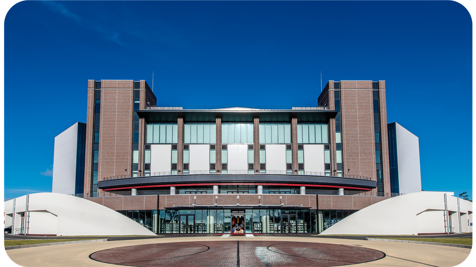

Tentang Turnamen
Piala Dunia FIBA 2023 adalah sebuah turnamen bola basket internasional yang diselenggarakan oleh Fédération Internationale de Basketball (FIBA), badan pengatur bola basket dunia. Turnamen ini merupakan salah satu acara olahraga
paling bergengsi dalam dunia bola basket dan biasanya diadakan setiap empat tahun sekali.
Selain memperebutkan gelar juara dunia, Piala Dunia FIBA juga akan menjadi ajang kualifikasi untuk Olimpiade Paris 2024. Tim yang tampil dengan baik dalam turnamen ini akan memiliki peluang untuk mendapatkan tiket menuju
Olimpiade.
Dengan Filipina, Jepang, dan Indonesia menjadi tuan rumah untuk Piala Dunia FIBA 2023, diharapkan bahwa turnamen ini akan menjadi sebuah peristiwa olahraga yang luar biasa dan akan menyatukan penggemar bola basket dari seluruh
dunia dalam sebuah perayaan kecintaan mereka pada olahraga ini.
Filipina
Philippine Arena adalah arena indoor terbesar di dunia dengan kapasitas tempat duduk maksimal 55.000. Tempat ini diresmikan pada Juli 2014 di Ciudad de Victoria, zona perusahaan pariwisata seluas 140 hektare di Bocaue dan Santa
Maria, Bulacan, sekitar 30 kilometer utara Manila. Itu adalah teater indoor serba guna terbesar di dunia. Tempat yang sepenuhnya ber-AC seluas 36.715 m² ini adalah Arena satu sisi berbentuk mangkuk yang menampilkan panggung
bergaya teater di salah satu ujungnya dan beroperasi sebagai tempat olahraga multi guna, acara keagamaan, dan konser. FIBA 3x3 World Cup 2018 dimainkan di sana dan Philippine Arena akan menjadi tuan rumah pertandingan Gilas
Pilipinas di jendela keenam kualifikasi FIBA World Cup pada Februari 2023.
Jepang

Okinawa Arena adalah aula acara terbesar di Okinawa, menampung hingga 10.000 pengunjung dan arena hiburan dan olahraga dalam ruangan paling mutakhir di Jepang. Itu juga berfungsi sebagai arena rumah bagi Ryukyu Golden Kings,
salah satu tim bola basket profesional paling populer di Jepang.
Okinawa Arena berada di ujung tombak hiburan olahraga di Jepang, terutama dengan fitur-fiturnya yang berfokus pada pengalaman penggemar, dan memegang rekor penonton terbanyak dalam sejarah B.LEAGUE. Arena baru ini menampilkan
peralatan premium yang akan meningkatkan pengalaman hiburan pengunjung.
Baru dibangun pada Februari 2021, Okinawa Arena telah mulai memantapkan dirinya tidak hanya sebagai arena bola basket paling modern tetapi juga salah satu tempat untuk event utama untuk konser dan olahraga dalam ruangan lainnya.
Okinawa Arena dikelola oleh Okinawa Arena Inc., perusahaan pengelola tempat dan layanan yang berlokasi di Okinawa, Jepang, dan dengan bangga akan menyelenggarakan pertandingan fase grup dan klasifikasi untuk FIBA Basketball
World Cup 2023.
Indonesia
Indonesia Arena adalah arena indoor serbaguna yang benar-benar baru. Berada di Kompleks Olahraga Gelora Bung Karno (GBK) di Jakarta yang saat ini sedang dibangun akan dibuka pada Juni 2023. GBK adalah kawasan eksklusif yang
didedikasikan untuk fasilitas olahraga dan Indonesia Arena ini akan menjadi yang terbesar di Tanah Air.
Berlandaskan konsep green building, Indonesia Arena mengadopsi filosofi tenun, representasi semangat gotong royong bangsa Indonesia, keberagaman bersatu membentuk bangsa yang kuat. Didesain dengan semangat yang sama, seperti
keranjang anyaman, prinsip tumpang tindih anyaman diwujudkan dalam bentuk massa bangunan yang ditumpuk satu sama lain dengan variasi pola yang unik.
Dirancang khusus untuk FIBA Basketball World Cup 2023, Indonesia Arena juga akan digunakan untuk acara olahraga, hiburan, dan konvensi pada masa mendatang. Para penggemar yang menghadiri event tersebut dapat mengharapkan
pengalaman modern yang premium dan canggih.